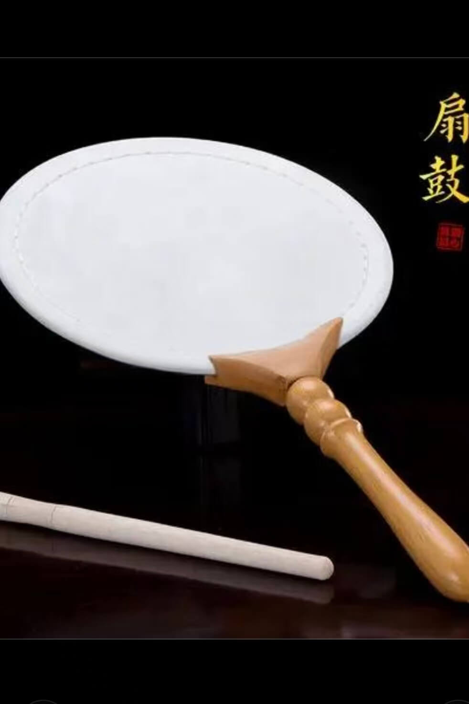
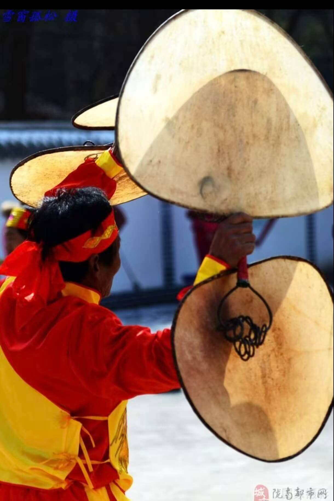
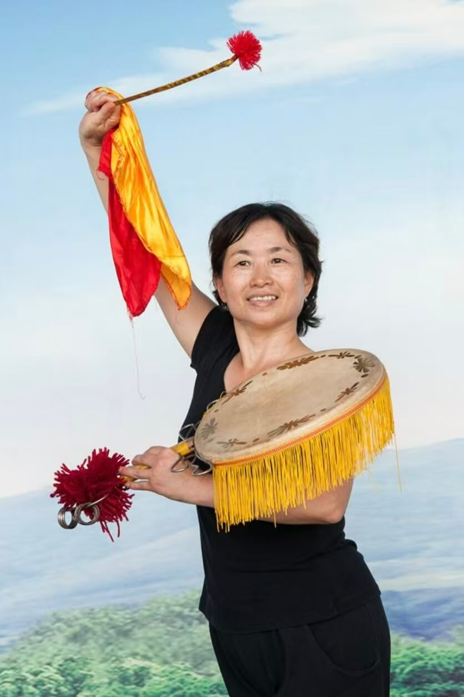
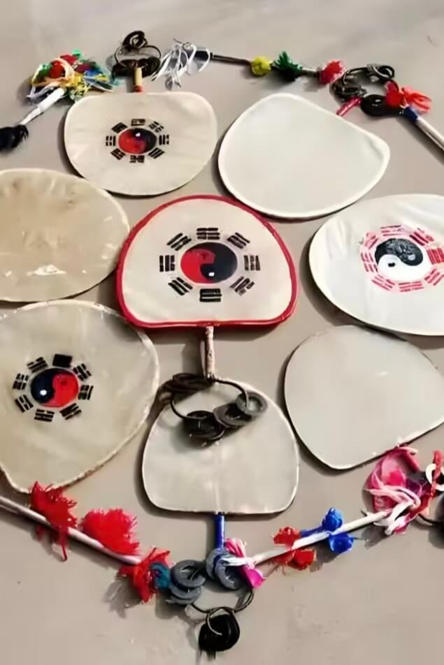
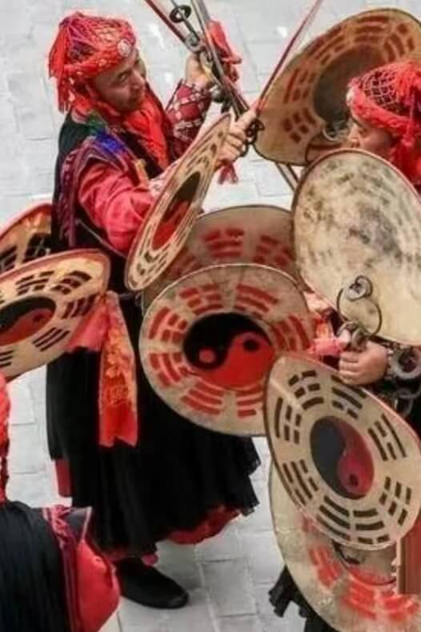
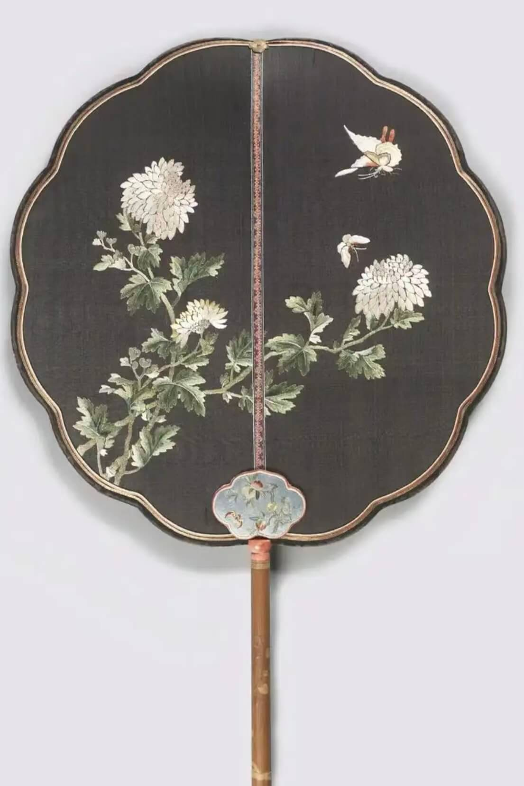

| 扇鼓图解
| 各类扇鼓介绍






按表演形式分类
有独唱和对歌形式，如《十二月》《丢戒指》；有角色、有人物、有情节的故事形式，如《二姑娘骑驴王小赶脚》；以说唱为主的形式，如《吕蒙正赶斋》。
按鼓谱分类
分为传统鼓谱和新编鼓谱。现有传统鼓谱六套，新编鼓谱四套，音乐有《四辈上工》《探妹歌》等多个版本。
按表演群体分类
分为老年扇鼓队表演、少儿扇鼓队表演等，不同群体的表演风格和特点略有差异，如老年扇鼓队表演更具传统韵味，少儿扇鼓队表演则更显活泼灵动。
按地域流派分类
赵州扇鼓在赵县多地均有分布，形成了不同的地域特色，其中以城东杨户村的扇鼓传承最为悠久，最具代表性。
按演出场合分类
分为舞台表演和广场表演 。舞台表演注重艺术的精致性和观赏性，广场表演则更强调群众性和互动性。
按时代发展分类
分为传统赵州扇鼓和现代创新的赵州扇鼓。现代创新的赵州扇鼓在保留原有艺术风格的基础上，融入了新的舞蹈元素如《平原扇鼓》《妞妞扇鼓赵州情》等